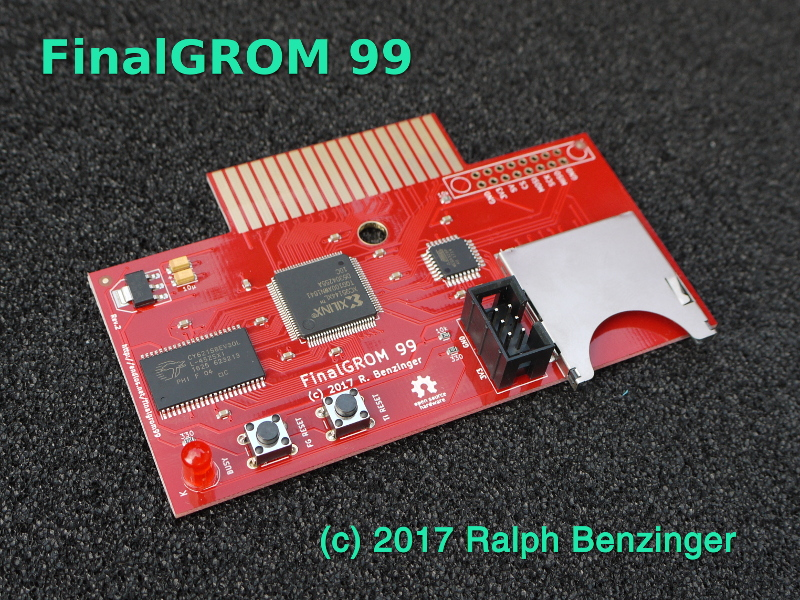
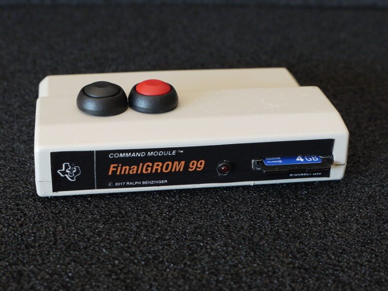
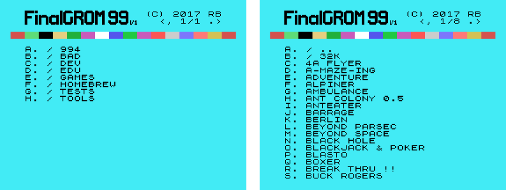

The TI 99/4A FinalGROM Cartridge, or FinalGROM 99 for short, is a cartridge for the TI 99/4A home computer that allows you to run ROM and GROM cartridge images from an SD card. It succeeds the FlashROM 99 released in 2016.

The FinalGROM 99 supports ROM images, GROM images, and mixed images of up to 1 MB in size that use the write-to-ROM bank switching scheme. The cartridge does not require the Peripheral Expansion Box and runs on both PAL and NTSC consoles, including modified consoles with an F18A. It will also run on v2.2 consoles and enables those to run ROM-only programs.
The cartridge offers some advanced modes that provide RAM and GRAM to programs. It also allows a running program to reload another program from SD card or to dump its state to SD card. All firmware of the FinalGROM 99 can be updated by SD card.
The FinalGROM 99 board has standard cartridge size and can be mounted in a TI 99 cartridge shell.

The FinalGROM 99 is released as Open Source Hardware under the CERN OHL license and the GNU GPL license. Both hardware design files and firmware sources are available on GitHub.
The project homepage with detailed instructions is located at GitHub.
Using the FinalGROM 99 is simple and doesn't require any special hardware or software.
To begin, copy some cartridge dumps or other images files onto an SD or SDHC card. You can create directories to organize your programs. Switch off the TI 99 and plug in the FinalGROM 99, then insert the SD card into the FinalGROM 99. Switch on the TI 99 and wait until the activity indicator on the FinalGROM 99 is no longer lit.
Press any key to bring up the TI menu screen. You should see the FINALGROM
99 entry. Select it to start the image browser, where you can page through
the list of available image entries with ,, ., SPACE, and number keys.
When you descend into a folder, the FinalGROM will reload its contents from
the SD card. To go back up to the parent folder, select the special folder
/ ...

Select the image you want to run. The screen will show a loader animation while the image loads. Once the image has been loaded, it will start automatically. The SD card is now no longer required and may be removed.
If only one image is found on the SD card, it is loaded immediately without the need to select it first. This method ensures maximum compatibility. Note that ROM images loaded as single-image SD card will not run on v2.2 consoles!
If you want to run a different program from the SD card, reset the TI 99 by
pressing FCTN-= and then reset the FinalGROM 99 by pushing the reset
button. If you do not reset the FinalGROM 99, the TI menu will show only
the previously selected image. Alternatively, you can power cycle the
console, which will reset both TI 99 and FinalGROM 99.
This section explains in greater detail how to prepare an SD card with images for use with the FinalGROM 99.
A cartridge image consist of one or several binary files containing raw
machine code that is loaded verbatim into the TI 99 cartridge memory. Many
programs are distributed as a single file images that typically end in
.bin.
An additional source for images are cartridge dumps for emulators. The MESS
emulator, for example, uses .rpk files, which are ordinary ZIP archives
that contain the actual image files:
helloc.bin <-
hellod.bin <- the image files
hellog.bin <-
layout.xml
meta-inf.xml
Note that newer versions of MESS also support ZIP files, but those cannot be used without conversion. Classic 99 uses plain dump files that may be used as-is.
Finally, many assemblers such as the xas99 cross-assembler or the xga99
GPL cross-assembler from the xdt99 tools can generate ROM and GROM
images. Files generated for Editor/Assembler Option #5 cannot be used, but
they may be converted for the FinalGROM 99 plus 32K RAM expansion.
Images may contain ROM code and GROM code. GROM code is the binary result of assembling the Graphics Programming Language (GPL) created by TI. An image for the FinalGROM 99 may contain up to 1024 KB of ROM code only, or 40 KB of GROM code plus 960 KB of ROM code. You can also configure the cartridge to provide RAM and GRAM instead of ROM and GROM, respectively.
Note that the FinalGROM 99 responds to all GROM bases, so it can support up to 64 KB of GROM, of which only the upper 40 KB (GROMs 3-7) are usable.
The FinalGROM 99 uses "non-inverted" ROM images, which is the default for
images until noted otherwise by the creator. Images ending in 3 or 9
are usually inverted. If you have an inverted ROM image, you can use the
Python script tools/invert.py found in the repository to de-invert
the image. If a single file ROM image crashes the TI 99, invert it and see
if that works instead.
Images may have more than one program entry to select. The FinalGROM 99
lists all entries of all images. Most autostarting GROM images don't have
any menu entries, so their filename followed by an asterisk * is shown
instead.
It is not recommended to use image collections for the FinalGROM 99 when the individual images are available. An image collection increases the loading time for the selected image and requires an additional key press to start the program.
Images are single files or multiple files with a common root name. All
filenames must end in .bin, and case is ignored. Files with other
extensions are ignored.
A GROM-only image is always a single file whose filename ends in G:
hellog.bin
IMPORTANT! The trailing G indicates that the file contents are GROM
code, so ROM files must not end in G!
A mixed ROM and GROM image is always split into up to 3 files, ending with
C and D for the ROM files and G for the GROM file:
helloc.bin
hellod.bin (optional)
hellog.bin
For mixed images, the ROM file must always end in C, but an optional
second ROM bank ending in D may be present. The GROM G file may be up
to 40 KB in size, whereas the ROM C file may be up to 960 KB in size. If
a D file is given, it must be exactly 8 KB in size.
Finally, ROM-only images may be a single file of almost arbitrary name or
split files like in the mixed case. When using a single file, the filename
must not end in D or G.
The split file format has been used for virtually all cartridge dumps for several decades now.
The filesystem used on SD cards has an filename character limitation, which
ignores case and shortens all filenames to fit into a 8.3 schema. Thus,
hellogromg.bin would be seen as HELLOG~1.BIN, and the trailing GROM
indicator G would be missed.
IMPORTANT! When using split files, make sure that each filename has no more than 8 characters (excluding the extension)! This is always true for legacy cartridge dumps.
HINT: A filename with more than 8 characters for a single file ROM-only
image will never end incorrectly in D or G.
In summary, don't rename cartridge dumps. GROM filenames must not exceed 8
characters AND must end in G. ROM filename must have more than 8
characters OR must not end in D or G.
The FinalGROM 99 supports both SD and SDHC cards, but not SDXC. Cards must be formatted with the FAT16 or FAT32 filesystem. FAT16 is the default for new SD cards of up to 2 GB, and FAT32 is the default for new SDHC cards of 4 GB and up.
Note that some cards seem to have a difficult personality. For SD cards, it may help to use FAT32 instead of the FAT16 default. If you absolutely cannot get a particular SD/SDHC card to work, just move on and use a different card.
Image files can be dragged and dropped without modification onto an SD card. To organize your card, you may create folders and subfolders with names of up to 8 characters and without extension. Each folder, including the root folder, may contain up to 171 images or folders. (Strictly speaking, it is 171 entries and folders, as one image can have more than one entry.)
The startup speed of the FinalGROM 99 depends on the internal order of the image files on the SD card. For optimal startup, erase your SD card and copy all image files and folders at once. If you have a root folder of about a dozen folders, the startup time should be no more than a fraction of a second.
The tools/ folder in the repository contains some Python scripts that
help you to manage your images.
The showcart.py tool will list the menu entries for the image files given.
Example: showcart.py images/*.bin
The invert.py tool will create an inverted version of the image given.
This can be used to de-invert an image.
Example: invert.py image.bin
The pad.py tool will pad a given file with zeros until it has the desired
length (default is 8192, or 8K).
Examples: pad.py image.bin pad.py largeimage.bin 65536
The mkea5cart.py will convert E/A5 programs to cartridge ROM images. The
resulting image needs the 32K memory expansion to run.
Example: mkea5cart.py program1 theprogram.bin "THE PROGRAM"
This section details the operation of the FinalGROM 99 and explains all of its features.
The FinalGROM 99 is always in one of two modes: menu mode or image mode.
When powering up, or after pushing the FinalGROM 99 reset button (marked FG
RESET), the FinalGROM 99 is in menu mode. In this mode, the TI 99 menu
screen shows the image browser with the list of all entries of all available
images. Entries followed by an asterisk show the filenames of autostarting
GROM images without menu entries.
Selecting an entry will load the selected image from the SD card and run it. Once the image is running, the FinalGROM 99 switches to image mode.
In image mode, the FinalGROM 99 acts like a ROM or GROM cartridge containing
the selected image only. In this mode, the TI 99 menu screen shows the
entries of the selected image. Pressing FCTN-= will warm reset the
console without affecting the currently stored image. The only way to
return to menu mode is to push the FinalGROM 99 reset button or power cycle
the console.
The SD card is scanned only once in menu mode. If you swap SD cards, you need to push the FinalGROM 99 reset button to re-read the SD card. Once in image mode, the SD card is no longer needed and may be removed until you want to run a different image.
If only one image is found on the SD card at startup, the image is loaded immediately. In this case the FinalGROM 99 skips menu mode and enters image mode directly.
Programs running on the FinalGROM 99 may load and start other programs on the SD card. During a reload, the cart remains in image mode.
The activity indicator LED lights up whenever the FinalGROM 99 is busy
reading the SD card. During this time, the entire cartridge is "offline" so
that the TI 99 cannot detect that a cartridge is plugged in. If you enter
the TI menu while the LED is still on, the FINALGROM 99 entry will be
missing.
At any time, you can press the TI reset button (marked TI RESET) to reset
the TI 99 console. The current contents of the FinalGROM 99 will be
preserved, and any image loading process will continue.
To summarize, these simple rules of thumb will make sure that you run the FinalGROM 99 without issues:
It is not possible to damage the FinalGROM 99 by incorrect menu or image operation.
The FinalGROM 99 allows you to view image help texts stored on the SD card.
To display a help text, press FCTN-7 (AID) to enter help mode, and then
press the letter of the image. The cart will briefly become offline before
the help text viewer will start.
In the help text viewer, you can press E or X to scroll the text by one
line, or ,, B, ., or SPACE to scroll by one page. Press F to find
some text ignoring case, or N to find the next occurrence of the last
find.
To return to the FinalGROM 99 menu, press Q to quit the help viewer.
If no help text is found, you'll return immediately to the FinalGROM menu.
If you want to write some help text, create a DIS/VAR 38 text file. You
can use both upper case and lower case letters, but should restrict yourself
to plain ASCII. Consecutive line breaks will be merged into one, so to
insert an empty line, enter followed by a newline. Longer lines will be
wrapper around without proper line breaking.
The first line of your help file may contain a hexadecimal color code for the text
>1E
denoting foreground and background color. Note that the line must start
with >, and only the last two hexadecimal characters are taken into
account. If no color is given, the default color is used.
The name of the help text file must end in .TXT. The filename of the
.TXT file must match the main filename of your image. For GROM and
mixed images, this would be the G file, for ROM-only files this
would be the C file or the actual filename for single-file images.
Most legacy cartridge images and homebrew programs will run as-is on the FinalGROM 99. This includes games, educational programs, tools, and programming languages.
But the FinalGROM 99 also offers two advanced modes that emulate advanced cartridge types that did not exist previously:
R] RAM Mode: provides up to 512 KB of ROM and 512 KB of RAMG] GRAM Mode: turns occupied GROM into writable GRAMX] RAM/GRAM Mode: provides both RAM and GRAMTo enable one of these modes for a specific image, put character R, G or
X at image offset 3, also known as "reserved" byte. For legacy images,
you may use a Hex Editor to modify the fourth byte. For new images, your
GPL header would start like
aorg >6000
data >aa01
byte >00, 'R' ; activate RAM mode
Note that each image type can use only certain modes, e.g., a ROM-only mode cannot use GRAM mode.
These advanced modes are mostly targeted at developers (see "How to Develop"), but RAM Mode is also required for running the Mini Memory image.
In general, all cartridge dumps with a write-to-ROM banking scheme should work fine on the FinalGROM 99. Some images converted from other formats, such as MBX or side carts, and many modern homebrew programs may also require a 32K RAM expansion.
A few programs, however, don't expect to be started by something other than the TI 99 menu, or have difficulties to deal with the remnants of previously run programs left over by a warm reset. In rare cases, this may lead to graphical glitches or other unexpected behavior. Also, some GROM programs written specifically for the TI 99/4, may confuse the menu system of the TI 99/4A.
Please refer to the troubleshooting section for a list of programs with known issues.
If you find additional images that don't work as intended on the FinalGROM 99, first check their filenames (see section "Filenames"), and then please send a note to the developer at r@0x01.de. Compatibility may be improved with a firmware update.
In normal mode, the FinalGROM acts as a 1024 KB ROM cartridge with 128 banks
of 8 KB each. To switch to a specific bank, a program writes to cartridge
address >60xx, where xx is the bank index times two. Note that unused
switch bits are ignored, so for a 4-bank program, addresses >6006 and
>7afe are equivalent.
For GROM or mixed images, the upper 8 banks are reserved for GROM code. The system GROMs 0, 1, and 2 cannot be used, though, so GROM images are loaded into GROMs 3 and up. Bank switching for the remaining 960 KB of ROM works as above.
Note that the FinalGROM 99 always starts programs with bank 0 selected, so you don't need to replicate the GPL header in all banks unless you want compatibility with other carts.
Two advanced modes can be enabled by setting the fourth byte in the main image file (see "How to Use").
In RAM Mode, each 8 KB bank is split into a ROM half-bank >6000->6fff and
a RAM half-bank >7000-7fff. The RAM may be freely written to, but it is
not battery-backed and will be lost on power down or cart reset. ROM
half-banks are switched by writing to >60xx, and RAM half-banks are
switched independently by writing to >68xx. Intermediate bits are again
ignored. Note that writing to >7xxx will not switch banks but update the
RAM at that location.
You can preset the RAM by putting the desired values in the upper half banks of your image. Only occupied banks contain RAM, so if you load a 4 bank image, you'll have 4 * 4 KB = 16 KB of RAM available.
In GRAM Mode, all occupied GROM banks will be GRAM banks. GPL doesn't
support GRAM except for the MOVE instruction, so
move 10, g@data, g@>7800
and alike would be the only way to write to GRAM.
Although 1024 KB is plenty of space for a TI 99 program, the FinalGROM 99 enables programs to reload and start other programs from the SD card. Any program type may load any program type.
To initiate the reload of a new program, the sequence >99, "OKFG99", >99
followed by the file data must be sent. Since the new image will overwrite
the running image, the reload code must be relocated to RAM before it can be
run. To check if the new image has been loaded, the program must watch
addresses >6000->6200 for a non-zero word to appear. (For a reloaded ROM
program, watching >6000 suffices.)
The repository contains sample code lib/reload_example.a99 and
lib/gload_example.gpl that may serve developers as a blueprint for
reloading. The syntax requires the xas99 or xga99 assemblers, but the
code is easily adapted to other assemblers as well.
To save the progress or high scores of games or to persist personal tool preferences, the FinalGROM 99 supports the dumping of single-file ROM images. To make sense, such an image should run in RAM or GRAM mode, so that its RAM banks/GRAM containing updated data are saved.
To initiate the dump, the sequence >99, "OKFG99", >99 followed by the
file data and dump code >ff03 must be sent. During the dump, the
cartridge logic needs exclusive access to the SRAM, so dumping can only be
initiated from scratchpad RAM or expansion RAM. To detect when the dump has
completed, the program must watch address >6000 (or more) for a non-zero
word to appear. Note that loading a GROM-only programs will always set ROM
address >6000 to value >9999.
Dumping saves the entire image in RAM/GRAM and overwrites the original image file on the SD card. For technical reasons, the dump cannot be written to a new non-existing file, so keep a copy of the original image around.
The repository contains sample code lib/dump_example.a99 and
lib/gdump_example.gpl that may serve developers as a blueprint for
dumping. The syntax requires the xas99 and xga99 assemblers, but the
code is easily adapted to other assemblers as well.
The FinalGROM 99 uses a 1M x 8 SRAM chip to store cartridge images of up to 1 MB. The TI 99 addresses the SRAM just like it would address a cartridge ROM or GROM chip. The 1 MB is divided into 128 banks of 8 KB each. GROMs occupy the upper 8 banks, although only 5 are used. Each GROM can hold up to 8 KB.
The XC95144XL CPLD at the heart of the FinalGROM 99 implements all of the cartridge logic. It manages access to the SRAM, isolates the cart from the TI bus when needed, handles the storage of images, emulates the GROMs, switches banks, and controls write access. Note that the TI bus is not connected to the SRAM, instead the CPLD will act as a scheduler for incoming bus requests.
The ATmega 328 microcontroller reads the SD card and sends the generated image browser and the selected image to the CPLD for storage in the SRAM. The microcontroller also contains an XSVF player that can update the programming of the CPLD. Similarly, its bootloader can update the microcontroller itself.
The image browser is generated by the microcontroller that analyzes all images stored on the SD card to extract their TI menu entries and start addresses. For GROM images, this may involve a lot of work, as the menu or autostarting information may be located high up in the GROMs.
The image selection in the image browser is recorded by the CPLD as a
sequence of writes to >7xxx on the bus, which is passed to the
microcontroller for processing. Currently, 12 bytes of data are
transferred, containing filename, action, and image type of the selected
image or folder.
When the image loads, the TI 99 keeps reading ROM addresses >6000->6200 in
a loop. A complete run of zero values indicates that the cart is still
offline, but a single non-zero value, such as the GPL header, signals that
the cart is back online. This implies that the loading has completed, and
the TI will branch to the saved start address of the image. GROM-only
images write to bogus bytes to ROM, and mixed images will hopefully contain
some non-zero value in the first 512 bytes.
Before the selected image runs, the FinalGROM 99 will clear the screen and restore both scratchpad RAM, color palette, and some character patterns. The FinalGROM 99 also ensures that all programs start with bank 0 selected.
The microcontroller uses a modified version of the Petit FatFs library to make sense of the FAT16/FAT32 filesystems used by SD cards. It also uses a port of the Xilinx XSVF player described in Application Note 058.
All currently available updates are listed below. These updates are distributed as binary files that must be applied via SD card. No special equipment is required to update the FinalGROM 99. Please check if the scope of a specific update concerns you before you apply the update. All updates are cumulative, so you only have to apply the latest update shown here.
Files ending in .AVR are updates for the microcontroller. To work, you
need to rename such a file to UPDATE.AVR and copy it onto an SD card.
Insert it into the FinalGROM 99, plug the FinalGROM 99 into the TI 99 and
turn on the console. The update will start automatically, and is complete
after a few seconds when the LED turns off. Make sure to remove the SD card
first before you reset the FinalGROM 99 or power-cycle the console, and to
delete the UPDATE.AVR before you use the SD card again! (Otherwise, the
update will be applied again.)
IMPORTANT! Do not turn off the the TI 99 while the update is in progress! You may brick your FinalGROM 99, which will require an AVR programmer to debrick again.
Files ending in .PLD will update the main logic inside the CPLD. Rename
such a file to UPDATE.PLD and copy it to an SD card. Now follow the
procedure above. The update will take about 15 seconds. Note that the TI
may crash during the update, but this does no harm. Do not forget to remove
the SD card before you power cycle or reset the FinalGROM 99, and to delete
the UPDATE.AVR before you use the SD card again!
A failed .PLD update may leave your FinalGROM 99 not working, but it
cannot brick your cart. In case of a failure, make sure the update file is
correct, and simply retry your update. Note that you do not need a working
TI 99, but just its power.
Any errors during the update will be indicated by a blinking LED. The blink pattern tells you what kind of error occurred:
#U1 (o)........(o).........(o)........(o)........(o)........(o) ...
indicates a bad SD card reader, a bad SD card, or the wrong filesystem,
#U2 (o).(o)........(o).(o).........(o).(o)........(o).(o)...... ...
indicates a missing or corrupt update file.
A higher number of blips indicates an error of the XSFV player while reading
the UPDATE.PLD file, which should not happen.
Issues: - When you turn on your console, the FinalGROM 99 blinks with pattern #1 (see troubleshooting section), but works normally when you press the FinalGROM 99 reset button once. - The FinalGROM 99 menu shows system or hidden files or folders.
This update delays the mounting of the SD card by half a millisecond, and ignores hidden and system files and folders on the SD card.
If you're in doubt if your FinalGROM 99 is working correctly, run the
cartridge tests in folder images/tests/ in the repository. All tests
run endlessly and will show errors as ERROR xxxx yyyy at the bottom of the
screen. The hex value xxxx is the expected word and yyyy is the actual
word read.
If the LED starts blinking, the FinalGROM 99 could not read some part of the SD card:
#1 (o)........(o).........(o)........(o)........(o)........(o) ...
indicates a bad SD card reader, a bad SD card, or the wrong filesystem,
#2 (o).(o)........(o).(o).........(o).(o)........(o).(o)...... ...
indicates the root folder cannot be read, or the image cannot be dumped,
#3 (o).(o).(o)........(o).(o).(o).........(o).(o).(o)......... ...
indicates a corrupt image, a corrupt help file, or an error during dumping.
In case of one blip, try re-formatting your SD card using FAT32, or try a different card.
The LED lights for some time, but the TI title screen won't show.
The FinalGROM 99 is active, but it interferes with the console GROMs.
Check if the CPLD is damaged, or if there are any solder bridges or other kind of unwanted contacts. If you just updated your CPLD, retry the procedure and note if there were any errors.
The TI 99 starts normally, but the menu shows only TI BASIC.
If the LED doesn't turn on at least briefly when powering up or pushing reset, some contacts on the card may be bad.
Make sure that you won't enter the TI menu while the LED is still lit.
Check that your SD card contains at least one valid image file, ending in
.bin or .BIN. Also review the filename requirements in "How to
Prepare".
The menu entry of some image, in particular some educational title, is missing.
Some programs start automatically and thus don't have a menu with an entry that the FinalGROM 99 could show. Instead, the cart lists the filename followed by an asterisk.
Check the filename of your image, and look for that filename in the image browser.
The image browser shows meaningless entries such as DEUTSCH or ITALIANO.
Some GROM cartridges don't show their own name in the TI menu screen, but only offer different language options.
Select your language to see which program this is. To show more friendly entries in the future, patch the image and replace the entry names with more meaningful ones. Alternatively, create a new folder with the image's abbreviated real name and put the image in there.
If you don't know which image is producing these rogue entries, you can use
the tools/showcart.py script in the repository like this:
$ showcart.py phm3112C.BIN phm3112G.BIN
to get the list of entries for the specified list of programs:
phm3112C.BIN: **MISSING >AA**
phm3112G.BIN: PARSEC
The images browser shows weird characters and does no longer react to key presses.
The connector of the FinalGROM 99 may be dirty/greasy, or the cart isn't inserted properly.
Please make sure that the cart is inserted firmly and the connector is clean. If necessary, remove the little sponge in the cart connector that may cause the greasiness of the cart.
Running some particular program from the browser crashes, either right away or after using the program for some time.
You may run an inverted image, a badly named image, an image with an incompatible bank switch scheme, an old program for the TI 99/4, or a "fragile" cartridge program.
To fix an inverted image, use the tools/invert.py script. Note that image
files with 8K only cannot be inverted.
Make sure that the filename is correct. GROM files must not exceed 8 chars,
and end in G. Single ROM files must not end in D or G, or exceed 8
chars. For example, STATISTIKG.BIN is too long for a GROM, and
DIGDUG.BIN ends in G, but is a ROM.
A "fragile" program is a program that makes certain assumptions about the state of scratchpad RAM and VDP RAM when it starts. Try loading the program directly to RAM by copying this image file as the only file on an SD card. This will provide the exact environment the program expects.
If this doesn't help, the image may be incompatible. Please send a note to the developer at r@0x01.de for further analysis.
Some functionality of the program doesn't work as expected.
Images for the TI 99/4 (not A) have a different menu structure that may confuse the FinalGROM 99. Video Chess is one such program.
Some programs don't expect to be started by another program or to find the remnants of previously run programs. This may lead to graphical glitches or other unexpected behavior.
Try restarting the program by pressing FCTN-= and selecting it from the
menu again to eliminate most issues. Alternatively, put the image as the
only image on the SD card so that it is loaded directly.
If this doesn't help, please send a note to the developer at r@0x01.de for further analysis.
The program cannot write to the RAM banks or the GRAM banks.
Make sure that the forth byte of the image is R, G, or X. For
GROM-only images, the G file must contain G. For ROM-only images, the
C file or the single file must contain R. For mixed images, the G
file must contain G, R, or X.
The Mini Memory won't save assembly programs.
The Mini Memory is a special cartridge that features some RAM, which is not present in other cartridges.
Open a hex editor and write the letter R or hex code >52 into the
fourth byte at >6003. This will enable RAM Mode, which required for the
Mini Memory. (For details, see section "Advanced Modes".)
Note however, that the FinalGROM 99 is not battery-backed, so any RAM contents will be discarded once the power is cut or a different image is loaded.
These programs are know to have minor or major flaws when run on the FinalGROM 99:
Note that this list refers to particular images. There might be alternative images of the same programs that work fine with the FinalGROM 99.
Please report problems to the developer at r@0x01.de so that they may be fixed with a future update.
The GitHub repository contains all hardware design files and software sources required to build the FinalGROM 99 by yourself.
Since the technology used is somewhat complex for a hobby project, you can get fully assembled FinalGROM 99 cartridges. Note that this offer doesn't include a cartridge shell.
Please fill out and include this snippet in your inquiry:
Amount
[ ] assembled FinalGROM 99 board, buttons and LED soldered €45
[ ] assembled FinalGROM 99 board, without buttons and LED €45
[ ] FinalGROM 99 laminated cartridge label € 1
world-wide shipping for up to two carts €10
Get the first option if you plan to use your FinalGROM 99 without shell. The other option is intended for FinalGROM 99s in cartridge shells so that you can mount the buttons and LEDs of your choice on the shell.
Please contact the developer at r@0x01.de for further information.
Note that I don't offer cartridge shells. There are, however, several options provided by other community members.
These third-party shells need the fully assembled cart with buttons and LED!
The TI 99/4A FinalGROM Cartridge is Open Source Hardware released under the CERN OHL license, in the hope that TI 99 enthusiasts may find it useful. Software components are released under the GNU GPL license.
The hardware was designed with the open source electronics design automation suite KiCad. The microcontroller code uses a modified version of the Petit FatFs library.
Heartfelt thanks go to Erik Spiehl (speccery) for helping me analyze an electrical problem on the development boards, and to Jim Brain (Brain) for showing me how to replace the Arduino shields by proper SD sockets.
Contributions to both hardware and software are welcome. Please email feedback, support questions, inquiries for parts, and bug reports to the developer at r@0x01.de. Discussions about the FinalGROM 99 happen over at AtariAge.